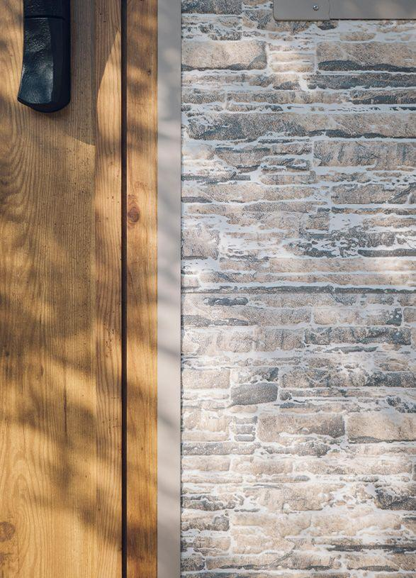
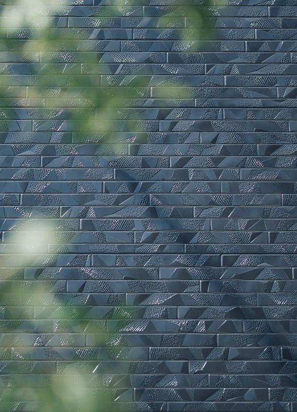
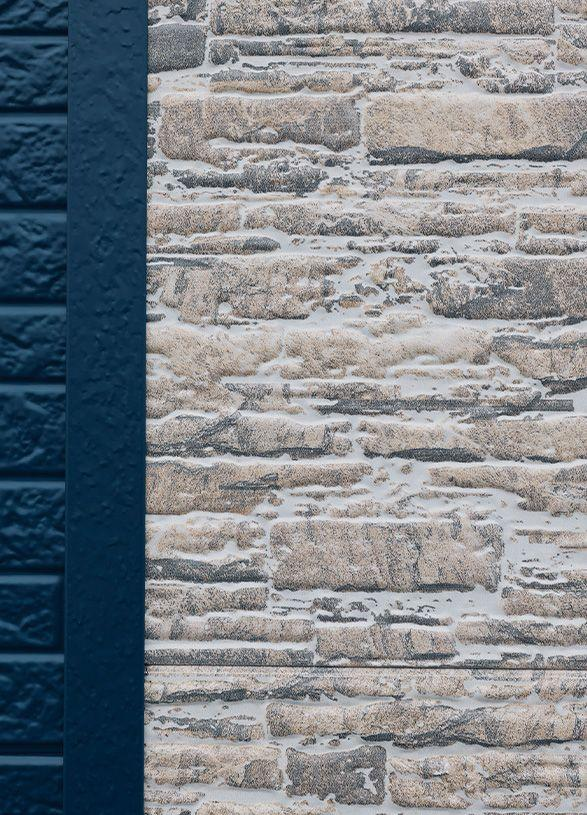
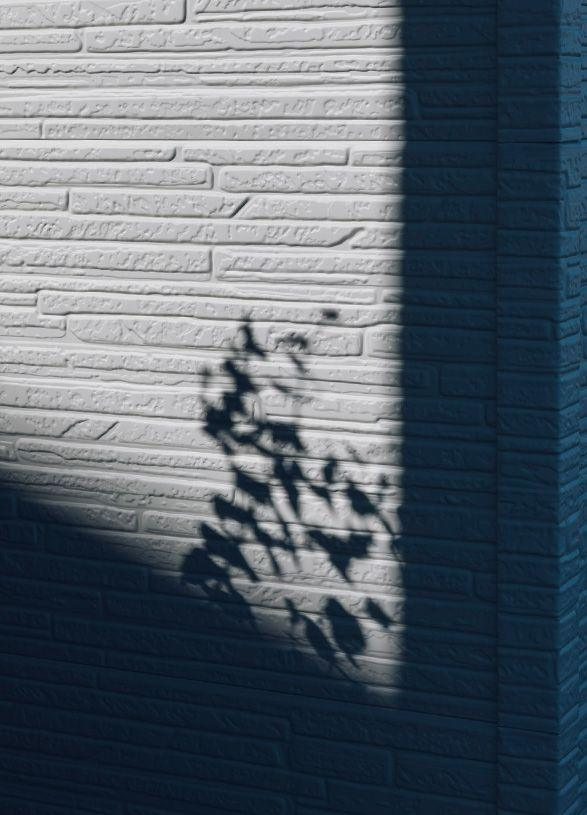
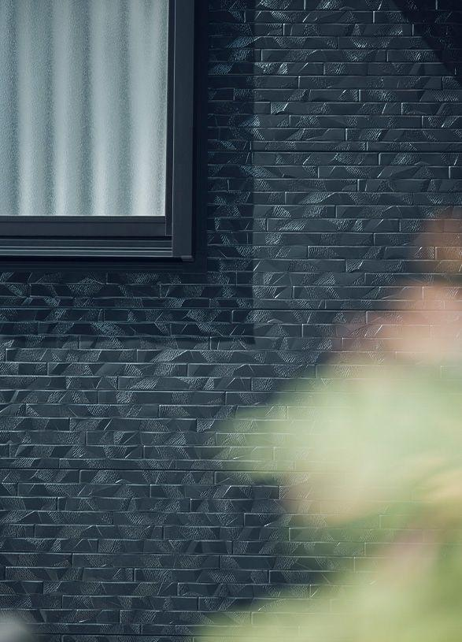
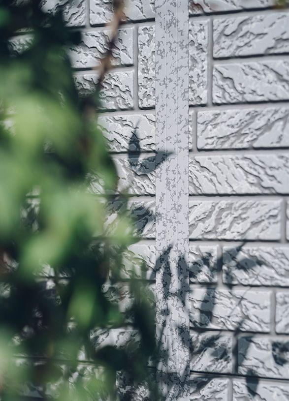
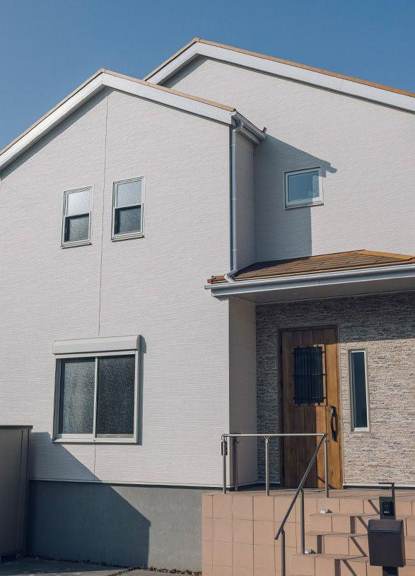
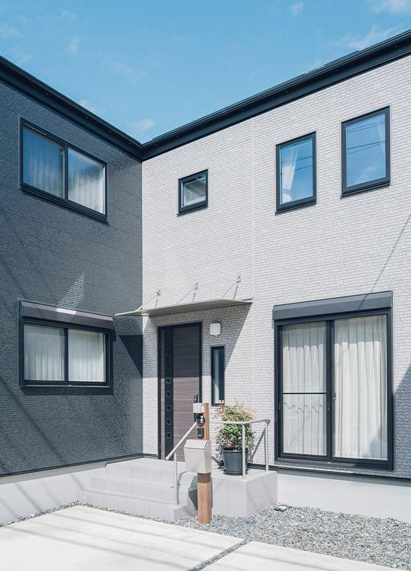
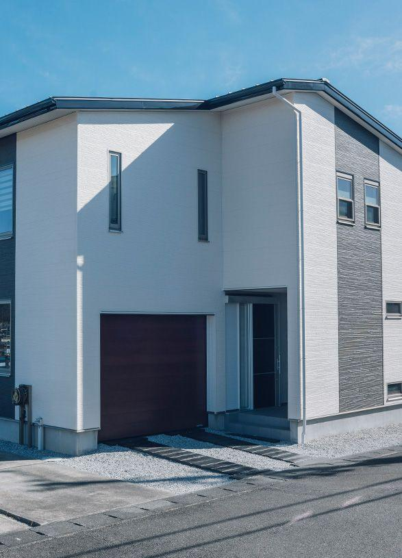

商材・事業を知る
30年以上、建物を守る外壁を届けています

アルミサイディングとは
アルミサイディングは、アルミ製の外壁材です。軽くて錆びにくく、断熱材と一体になった構造で、夏の暑さや冬の寒さ、外の騒音から住まいを守ります。
軽いため建物への負担が少なく、今ある壁の上から張り重ねるカバー工法に向いています。色や柄のバリエーションも豊富で、石積み調やレンガ調など、住まいの印象を大きく変えることができます。

耐久性
30年以上、建物を守る
断熱性
断熱材一体型で、外から家を包む
遮音性
外の音を和らげる
デザイン
石積み調・レンガ調など多彩
取り扱い外壁材の例

スマイルストーン
2005年に開発した自社ブランドの外壁材。

ルアナ
施工事例で多く採用している外壁材。

アルテシモ
施工事例で採用している外壁材。

シェルグロー
施工事例で採用している外壁材。

グランブリック
レンガ調の外壁材。
フランドルNEO
施工事例で採用している外壁材。
カバー工法とは
1. 調査
今の外壁の状態を確認し、補修が必要な箇所を洗い出す
2. 下地
既存の壁の上に、新しい外壁を固定する下地を組む
3. 施工
アルミサイディングを張り、継ぎ目や窓まわりを仕上げる
4. 点検・引き渡し
仕上がりをお客様と確認し、お引き渡し
既存の外壁をはがさず、上から新しい外壁で覆う工法です。解体による騒音や廃材が少なく、工期も短いため、住みながらリフォームできるのが特長です。
外壁リフォームの方法の比較
| 方法 | 内容 | 特徴 |
|---|---|---|
| 塗装 | 今の外壁の上から塗料を塗り直す | 費用を抑えやすいが、定期的な塗り直しが必要 |
| 張り替え | 今の外壁をはがして新しい外壁を張る | 下地から直せるが、解体・廃材が多く工期が長い |
| カバー工法 | 今の外壁の上から新しい外壁を張る | 解体が少なく工期が短い。断熱性も高められる |
施工事例

BEFOREAFTER※デモのため、施工前は施工後写真を加工したイメージです。実際の施工前後写真に差し替えます。
築30年の木造住宅
ひび割れの目立つモルタル壁を、石積み調の外壁へ。断熱性も高まり、冬の寒さが和らいだとご好評でした。

2階建て住宅
色あせたサイディングを、レンガ調の外壁へ。住みながら約◯週間で完成しました。

店舗併用住宅
雨漏りの不安を、断熱性の高い外壁で解消。店舗の印象も一新しました。
施工品質への取り組み
自社の施工体制
自社の職人・施工管理が工事を担い、品質を管理しています。
コンテスト入賞
日本金属サイディング工業会の施工例写真コンテストで連続入賞。
完成後の点検
お引き渡し後も点検とご相談に対応しています。
リフォーム市場の、これから
国内の住宅は築年数の古いものが増え続けています。新しく建てるより、今ある家を長く大切に使う。そうした考え方が広がるなかで、外壁リフォームの需要はこれからも続いていきます。
- 〜10年
- 11〜20年
- 21〜30年
- 31〜40年
- 41年〜